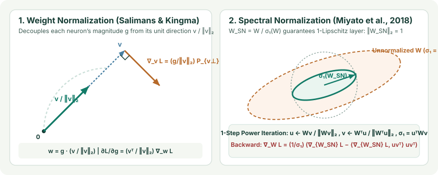

Parameter Normalization: Weight Normalization, Weight Standardization, and Spectral Normalization
Normalize the weight matrix $W$ directly rather than runtime activations: derive Weight Normalization’s polar decomposition $w = g\,v/\|v\|_2$, compare Euclidean vs. zero-mean Weight Standardization, and derive $1$-Lipschitz Spectral Normalization $W/\sigma_1(W)$ and its rank-$1$ backward gradient.
Every activation normalizer (BatchNorm, LayerNorm, RMSNorm, GroupNorm) computes a reduction over the activation tensor $z = Wx$ on every forward pass. What if we normalize the weight parameters $W$ directly before the matrix multiplication? Parameter normalizations are $100\%$ independent of batch size, add zero activation-memory traffic, and—in the case of Spectral Normalization—bound the exact Lipschitz constant of the layer.
1. Weight Normalization: decoupling magnitude $g$ and direction $v/\|v\|_2$
Salimans and Kingma (2016) proposed Weight Normalization (WeightNorm), which reparameterizes each output neuron’s weight vector $w\in\mathbb R^d$ in terms of a learnable scalar gain $g\in\mathbb R$ and an unnormalized direction vector $v\in\mathbb R^d$:
Differentiating the loss $\mathcal L(w)$ with respect to $g$ and $v$ via the chain rule reveals the exact same scale-invariant orthogonal geometry we derived in Chapter 01:
where $P_{v^\perp} = I - \frac{vv^\top}{\|v\|_2^2}$ is the orthogonal projector onto the hyperplane perpendicular to $v$. Notice two key properties:
- Self-stabilizing direction updates: Any radial spike in $\nabla_w\mathcal L$ parallel to $v$ is projected out of $\nabla_v\mathcal L$ and routed solely into the scalar gain derivative $\frac{\partial\mathcal L}{\partial g}$. Meanwhile, as $\|v\|_2$ grows via Pythagorean steps, the step size on the unit sphere automatically scales by $1/\|v\|_2$.
- Why WeightNorm alone is weaker than BatchNorm/LayerNorm on deep ReLU nets: Constraining $\|w\|_2 = |g|$ controls the second moment only if the input $x$ already has zero mean and isotropic covariance, and does not subtract the mean of $w^\top x$. If $v$ aligns with the all-ones vector $\mathbf{1}$ on non-negative ReLU activations, the mean $\mathbb E[w^\top x]$ can still drift rapidly across depth. That is why Salimans and Kingma paired WeightNorm with a data-dependent initialization pass (setting $g_0 = 1/\sigma(v^\top x)$ and $b_0 = -\mu(v^\top x)/\sigma(v^\top x)$ on the first mini-batch), or why modern convnets use Weight Standardization ($\hat w = (w - \mu_w)/\sigma_w$, Chapter 04) which enforces both $\mathbf{1}^\top\hat w = 0$ and $\|\hat w\|_2 = \sqrt{d}$.

2. Spectral Normalization: enforcing $1$-Lipschitz layers via $\sigma_{\max}(W)$
WeightNorm normalizes each row $w_i^\top$ of $W\in\mathbb R^{d_{\text{out}}\times d_{\text{in}}}$ independently ($\|w_i\|_2 = 1$). However, even if every row of $W$ has unit Euclidean norm, the matrix $W$ as a whole can still amplify a correlated input vector $x$ by up to $\sqrt{d_{\text{out}}}$ (for example, if all $d_{\text{out}}$ rows of $W$ are identical!). In Wasserstein GANs, discriminator regularization, and certified adversarial robustness, we need to bound the worst-case amplification (Lipschitz constant) of the entire layer:
where $\sigma_1(W)$ is the largest singular value of $W$. Spectral Normalization (Miyato et al., 2018) divides the weight matrix by $\sigma_1(W)$ at every forward pass:
Because the Lipschitz constant of a composition of functions satisfies $\|f_L\circ\cdots\circ f_1\|_{\text{Lip}}\le\prod_{l=1}^L \|f_l\|_{\text{Lip}}$, and $1$-Lipschitz activations (ReLU, Leaky ReLU, Tanh, GroupSort) have Lipschitz constant $\le 1$, Spectral Normalization guarantees that the entire deep network is $1$-Lipschitz!
3. Fast $1$-step power iteration and the rank-$1$ backward gradient
Computing a full SVD of $W\in\mathbb R^{d_{\text{out}}\times d_{\text{in}}}$ at every training step would cost $O(\min(d_{\text{out}},d_{\text{in}})^2\max(d_{\text{out}},d_{\text{in}}))$ FLOPs. Instead, because $W$ changes only slightly from step $t$ to step $t+1$, Miyato et al. persist the estimated top left and right singular vectors $\tilde u\in\mathbb R^{d_{\text{out}}}$ and $\tilde v\in\mathbb R^{d_{\text{in}}}$ as module buffers and run a single step of power iteration per forward pass:
Two matrix–vector multiplies ($W\tilde v$ and $W^\top\tilde u$) cost only $O(d_{\text{out}}d_{\text{in}})$—negligible compared to the mini-batch matrix multiply $WX$ of cost $O(B\,d_{\text{out}}d_{\text{in}})$!
How does backpropagation flow through $W_{\text{SN}} = W / \sigma_1(W)$? Since $\sigma_1(W) = u_1^\top W v_1$ where $u_1,v_1$ are the unit top left and right singular vectors ($\partial u_1^\top W v_1 / \partial u_1 = 0$ on the unit sphere by stationarity of the Rayleigh quotient), the derivative of the top singular value with respect to $W$ is the rank-$1$ outer product:
Applying the quotient rule to $W_{\text{SN}} = W / \sigma_1(W)$ with upstream gradient $G = \nabla_{W_{\text{SN}}}\mathcal L = (\nabla_y\mathcal L)x^\top$ gives the exact Spectral Normalization backward gradient:
Look at what the second term does: it subtracts a multiple of the rank-$1$ matrix $u_1 v_1^\top$ so that $\langle \nabla_W\mathcal L, W\rangle = 0$. This prevents the network from concentrating all sensitivity along a single dominant singular direction $v_1$, encouraging the remaining singular values $\sigma_2(W),\sigma_3(W),\dots$ to stay active and diverse!
import torch
import torch.nn as nn
# Built-in PyTorch parametrizations for WeightNorm and SpectralNorm:
linear_wn = nn.utils.parametrizations.weight_norm(nn.Linear(128, 64))
linear_sn = nn.utils.parametrizations.spectral_norm(nn.Linear(128, 64), n_power_iterations=1)
x = torch.randn(16, 128)
y = linear_sn(x)
# Verify that the effective weight matrix of linear_sn has top singular value ~ 1.0:
sigma_max = torch.linalg.matrix_norm(linear_sn.weight, ord=2).item()
print(f"Spectral norm ||W_SN||_2 = {sigma_max:.6f}")4. Questions worth answering
Row normalization sets the $\ell_2$ norm of each individual row $\|w_i\|_2 = 1$, which implies $\|W\|_F = \sqrt{d_{\text{out}}}$, but the largest singular value $\sigma_1(W)$ can lie anywhere between $1$ (when rows are mutually orthogonal) and $\sqrt{d_{\text{out}}}$ (when all rows are parallel). Spectral Normalization constrains the operator norm $\sigma_1(W) = 1$, which bounds $\|Wx\|_2 \le \|x\|_2$ across all possible input directions $x$.
Yes! Because neither $g\,v/\|v\|_2$ nor $W/\sigma_1(W)$ depends on the runtime input $x$, you can evaluate the normalized weight tensor once after training (`nn.utils.parametrize.remove_parametrizations(layer, "weight")`) and deploy a standard `nn.Linear` or `nn.Conv2d` with zero runtime overhead.
Sources
Salimans and Kingma, Weight Normalization: A Simple Reparameterization to Accelerate Training of Deep Neural Networks (NeurIPS 2016); Miyato, Kataoka, Koyama, and Yoshida, Spectral Normalization for Generative Adversarial Networks (ICLR 2018).